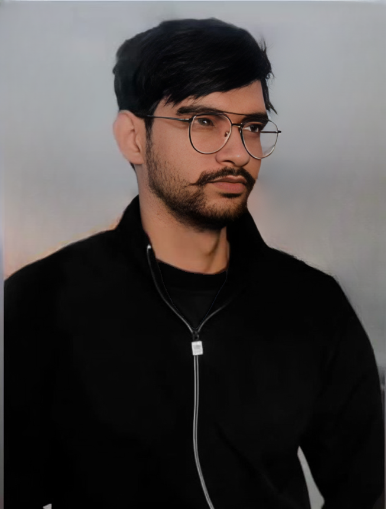

Sahil
Kumar
Generative AI Engineer

Creative Focus
Generative AI Systems
LLM Applications
RAG & Prompt Engineering
Machine Learning
Natural Language Processing
Deep Learning
Tools
LLMs, LangChain
Vector Databases
FastAPI, Docker
Python, Pandas
NumPy, SQL/NoSQL
Matplotlib, Seaborn
About
I am a Generative AI Engineer who enjoys building practical AI applications using large language models. I work mainly with Python, LangChain, and FastAPI, and use Docker to package and run applications. My projects cover Generative AI, machine learning, and deep learning, and I am currently preparing for my first role in the AI industry.What drives me is curiosity and the satisfaction of seeing an idea turn into something real and useful.
Projects
Customer Churn Prediction
This project focuses on predicting whether a customer is likely to leave a service based on historical behavior data. The dataset was cleaned and analyzed, followed by feature engineering and training multiple classification models using Python and scikit-learn.
The objective was to better understand customer behavior and identify customers at high risk of churn.
Technologies: Python, Pandas, scikit-learn
End-to-End Machine Learning Pipeline (MLOps)
This project implements an end-to-end machine learning pipeline covering data preprocessing, model training, evaluation, and experiment tracking.
MLflow was used to log experiments, parameters, and metrics, while Docker was used to containerize the pipeline for consistent execution across environments.
Technologies: Python, MLflow, Docker
Education
Bachelor of Commerce (B.Com)
Banking and Financial Support Services
Maharaja Agrasen Himalayan Garhwal University
May 2019 – July 2022
Contact
sahil.kumar.tech01@gmail.com